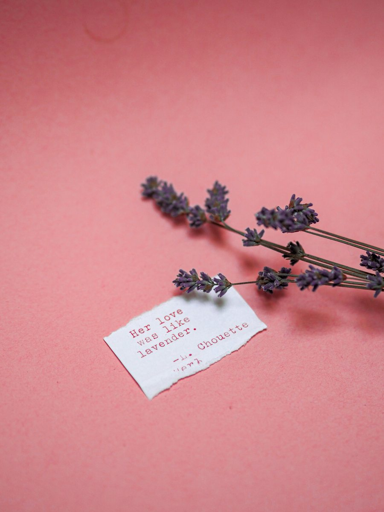
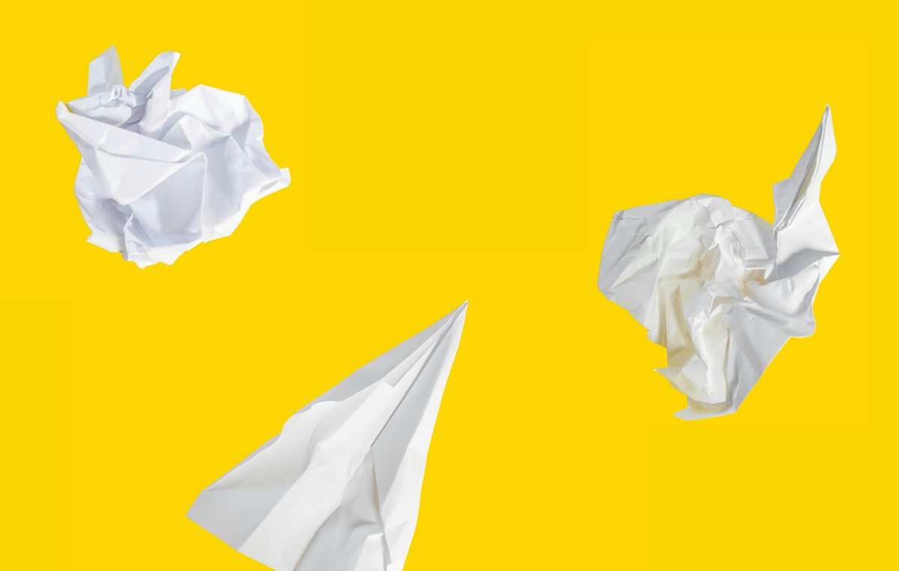

소년이 온다추천 도서
소년이 온다추천 도서 채식주의자추천 도서
채식주의자추천 도서 대온실 수리 보고서추천 도서
대온실 수리 보고서추천 도서 급류추천 도서
급류추천 도서 시간의 계곡추천 도서
시간의 계곡추천 도서 인간 실격추천 도서
인간 실격추천 도서 노르웨이의 숲추천 도서
노르웨이의 숲추천 도서 정원에 대하여추천 도서
정원에 대하여추천 도서 네 칼이 센가, 내 칼이 센가추천 도서
네 칼이 센가, 내 칼이 센가추천 도서 새벽의 시인추천 도서
새벽의 시인추천 도서 위시메이커추천 도서
위시메이커추천 도서 삶추천 도서
삶추천 도서



책을 펼치는 저녁, 내 취향을 찾은 순간
책을 고르는 시간이 길어질 때, 첫 문장에 귀 기울여 보세요. 어느 날의 독서 기록을 나눕니다.
YOUR NEXT CHAPTER
ThRead
책과 이야기를 연결하는 새로운 독서 경험
좋아하는 책을 발견하고, 생각을 나누어 보세요.
BEST PICKS
지금 가장 사랑받는
열두 권의 이야기


PERSONALIZED READING
구매 목록과 감명 깊게 읽은 도서 등
활동 데이터 기반 인공지능 도서 추천
매일의 읽기를 새로운 영감으로 이어 보세요.
STORIES FROM READERS
최근 사람들이 많이 공감한 게시글입니다

책을 고르는 시간이 길어질 때, 첫 문장에 귀 기울여 보세요. 어느 날의 독서 기록을 나눕니다.
오래 남는 문장들은 책장을 덮은 뒤에도 다시 떠오릅니다. 여러분은 어떤 문장을 기억하나요?
새로운 기술을 바라보는 관점은 한 권의 책으로도 달라집니다. 읽으며 발견한 질문을 적어 봅니다.

누구나 나만 아는 작은 장면이 있죠. 평범한 장면에 특별한 의미를 남긴 책을 소개합니다.
화면이 아닌 종이에 써 내려가면 문장에 머무는 시간이 길어집니다. 오늘도 한 줄을 기록합니다.
서로 다른 해석이 만나면 같은 책도 새롭게 읽힙니다. 기억에 남았던 대화를 공유해요.